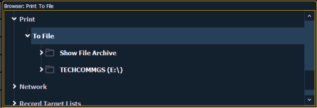
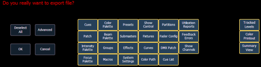
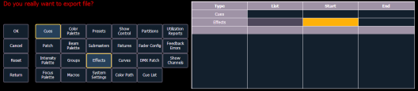

Ion provides you with the ability to save a show file or aspects from a show file to a PDF file for printing. Ion has three locations to save the PDF files including the Show File Archive, the File Server (if connected), or a USB device (if connected). Saving the PDF file to a USB (F:) device, allows you to then print the PDF from a personal computer. Printing directly from Ion is not supported.
In Setup, you can select the page orientation and paper size for these PDF files, see PDF Settings for more information.
To save a PDF of an Eos Family show file, navigate within the browser to: File> Print> and press [Select].

This will open the printing screen in the CIA. From this screen you can choose which aspects of the show file you want to save to PDF. By default all aspects are selected (gray) and will be saved. To withhold any show aspects from printing, simply deselect them in the CIA by touching the respective button. Deselected show aspects will appear in black.

To reselect all show aspects, press the {Select All} button and all buttons will return to gray (selected). To stop the show file from being saved to a PDF and return to the browser, press the {Cancel} button. When you have selected/deselected all of the show aspects you require, press the {Ok} button to create the PDF file.
There are three additional options on the far right side of this display:
You can also choose to print specific portions of show aspects. To select this information, press the {Advanced} button. The buttons at the center of the CIA will again represent all of the show aspects that you can choose. By default all aspects will be deselected (black).

As you select aspects, they will be added to the table in the CIA. For each component in the list, you can specify the desired range by pressing the proper area in the table and entering numbers from the keypad. The columns in the table are:
Note: In the {Advanced} view, you can use the [Thru] key to jump to the End column.
To deselect all show aspects, press the {Reset} button and all buttons will return to black (deselected).
To return to the main print screen, press the {Advanced} button. To stop the show file from being saved to a PDF file and return to the browser, press the {Cancel} button. If you are ready to save the file, press the {Ok} button. You will be prompted to name the file.
The PDF will have the show name, date and time it was created, and date and times for when the show file was last saved. It also gives the Eos Family software version information. If multiple aspects were selected to save to the file, there will be hyperlinks at the top of the PDF so you can quickly jump to a section.
Note: If you have cues selected, cue notes and scenes will display along with additional cue information.